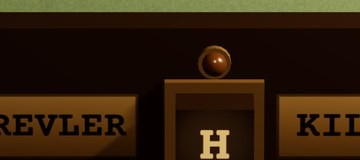
Bakalit + pirinç plakaBakalit #24180F R .38 · pirinç #B8955A R .36 M .85 · krem rakam #EFDCAE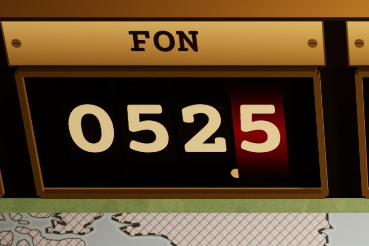
Sayaç modülüÇark #1C150E · rakam #EFDCAE · onda bir #801810 · pirinç çerçeve · emissive .16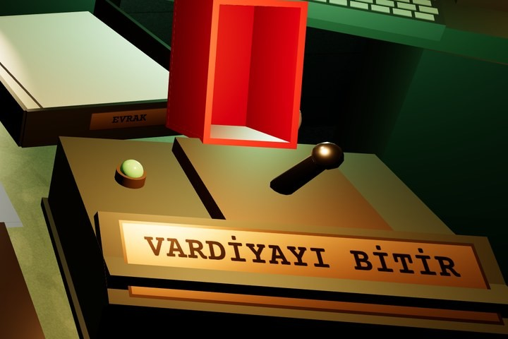
Kapaklı şalterZeytin döküm #4B5340 R .62 M .15 · kapak #B8241A R .42 · krom kol #C8CCCC R .22 M 1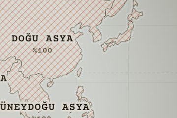
Kâğıt haritaWorld Space Canvas · kâğıt #F1E9D6 · tarama #9A1E14 · ışık almaz, lamba dokusu üstte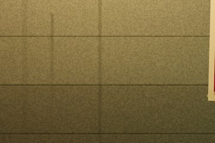
Beton duvar#7C837F R .96 · 15 cm kalıp izi + nem lekesi · tek 2K doku, tekrar yok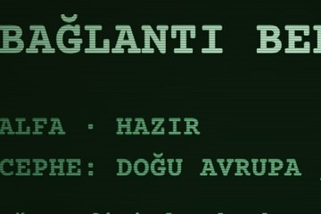
CRT fosforCam #07100B · fosfor #A6E8B8 / #5E9C73 · R .9, yansıma yok · tarama çizgisi sprite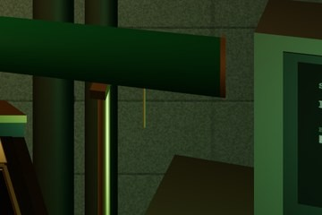
Lamba camı, boruYeşil cam #1E5236 R .18 · pirinç gövde · boru boyası #3F4A3D R .55 M .2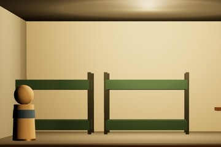
Kesit maketiAhşap #6B4A2E R .7 · oda duvarı #CFC6AE · piyon #C9A77A · ranza #4B5340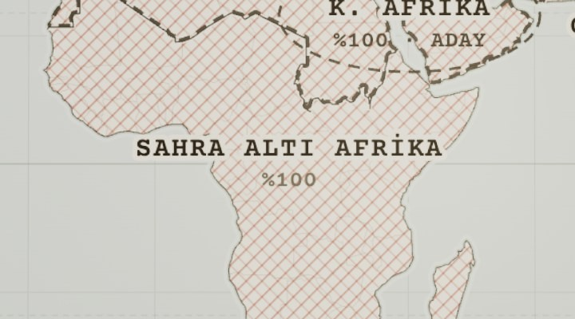
İŞGALÇapraz kırmızı tarama #9A1E14 (45° α .50 + −45° α .32, 11 px). Etiket + “%100”.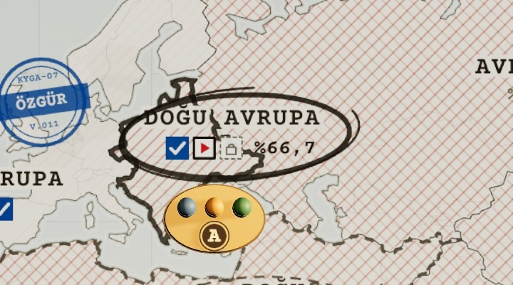
CEPHETek yön tarama (%66,7: 11 px · %33,3: 22 px) + 5 px mürekkep kontur + yağlı kalem halkası + raptiye + üç sektör işareti; ekip figürü bölgenin içinde.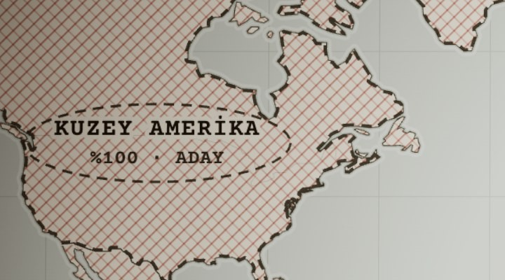
ADAY KOMŞUTarama korunur + kesik grafit kontur (12/8) + kesik halka + “%100 · ADAY”.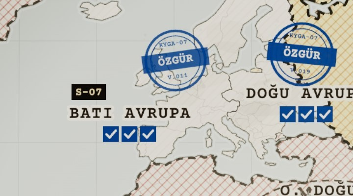
ÖZGÜRTarama silinir (α .07 iz + silgi lekesi) + mavi yuvarlak damga “ÖZGÜR · V.011” + ✓✓✓.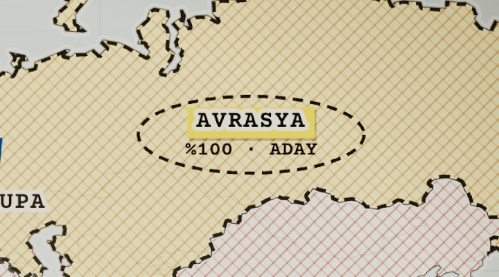
SEÇİLİ ADAYDolgu #F5D646 α .34 (üzerinde α .12) + etiket fosforlu çip + 4 px kesik halka.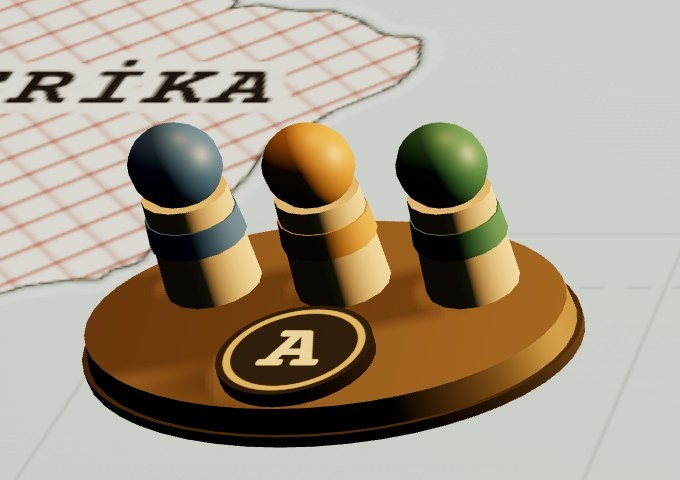
HAZIR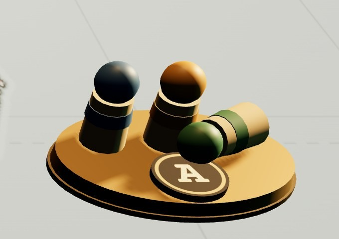
YARALI · 1 GÜN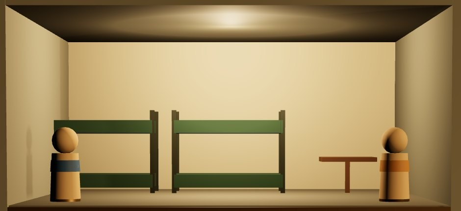
ÇALIŞIYOR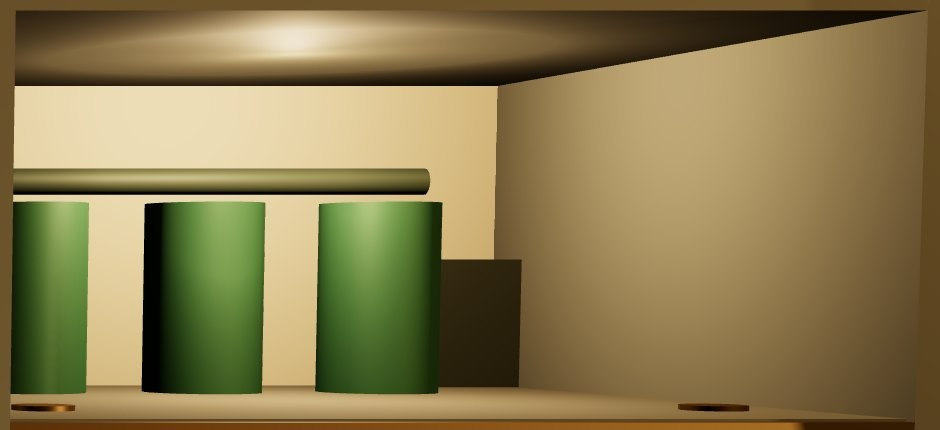
SEÇİLİ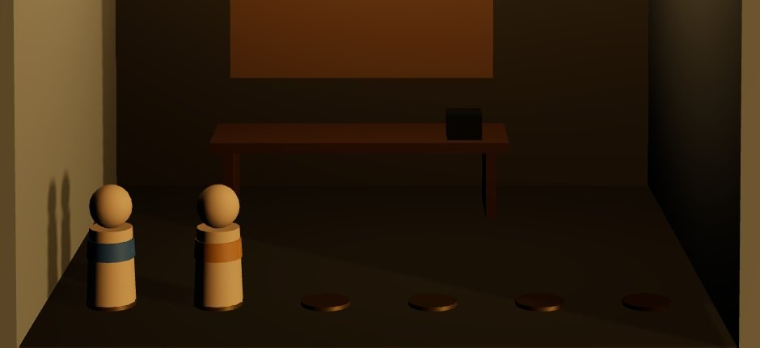
ENERJİSİZ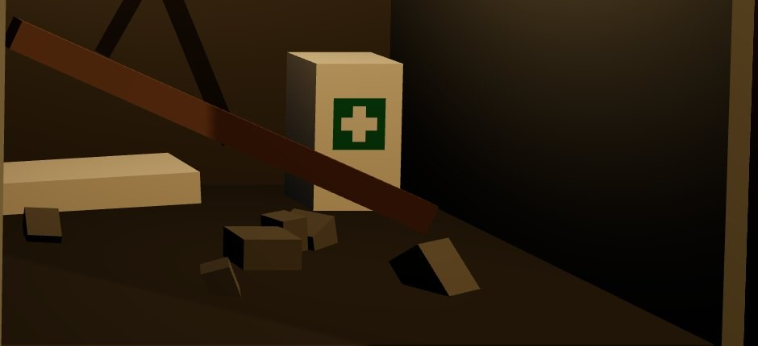
HASARLI